企画 よこおごはん
ナナペメンバーである横尾は嫌いな食べ物がないとのこと
きっと見栄を張っているに違いない、そう思った座長は一つの提案をしました。
横尾の嫌いな食べ物を探せ！＠東京大学本郷キャンパス
＜ルール＞
・メンバーの嫌いな食べ物を集め、横尾に食べさせる
・横尾が食べられなかったらそれが嫌いなもの
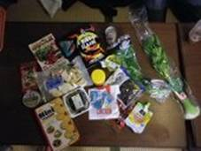
↑こうして集められた食材たち、見つかるのを願うばかりである。
（以降食べ物の後ろには、それが嫌いな人の名前を記す。）
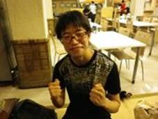
↑意気込む横尾、その顔は苦痛にゆがむのか？
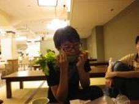
↑まずは小手調べ、セロリ（片山・中村・小川・高木）から。
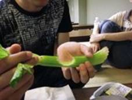
↑難なく食べる。
しかしこれはまだ序の口。
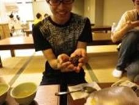
↑続いてレーズン（成子・片山）
山盛り手に乗せて…
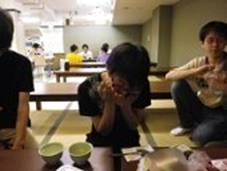
↑一気に行く横尾
こちらも大丈夫なようだ。
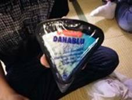
↑さらにはチーズ（成子・丸山）
ブルーチーズだろうと問題なし。
この調子でどんどん食べる横尾
本当に嫌いなものはないのか？
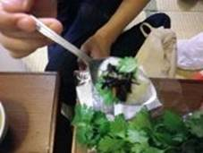
↑ヨーグルト（成子・藤野）にパクチー（山田・柴田）とひじき（野崎）をのせたもの
食はむしろ進んでいる様子。
ここから世界のゲテ物に突入
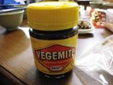
↑取り出したのはベジマイト（野崎）
オーストラリア人はパンに塗って食すらしい。
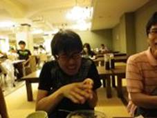
↑とにかく塩辛い、これは嫌いな食べ物になるか？
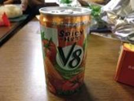
間髪入れずタイの野菜ジュース（柴田）
辛い、これで追い打ちをかける。
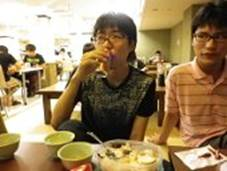
しかしこちらはなぜか余裕で飲む横尾。
完全に仇となってしまった。
次々突破され焦り始める一同
ここで成子が満を持して出したのは
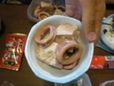
↑イカと豆腐の煮物（成子）
実家のころの過酷な思い出、イカから出る紫の汁が食を阻む。
息子にトラウマを与え、憂鬱にするほどおいしくないメニューなのに…
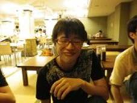
↑余裕の笑み、もはやうすら恐ろしい。
やがてメンバーもやけになる。
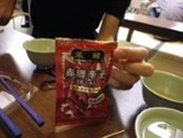
唐辛子そのまま（岡田・中村）
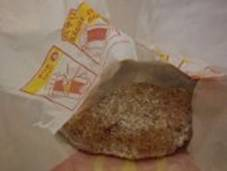
フライドチキンにしゅわしゅわパウダーをかけたもの（朱）
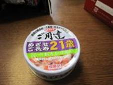
猫缶（中村）
しかし横尾はそれを凌駕する実力を見せ続ける。
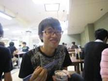
↑むしろ猫缶が好物になった横尾。
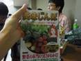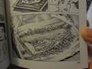
↑（左）美味しんぼの単行本、（右）その１ページ
これも立派な食べ物（中村）
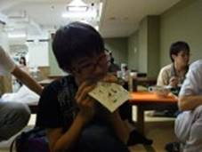
↑漫画すら食べる横尾
もはやこの企画、座長の負けかと思ったとき…
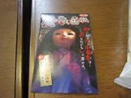
↑怖い話ガム（野崎）、駄菓子
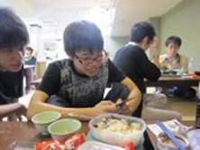
↑おまけの怖い話を読む横尾。
食べている様子はない…。
食べろと言っても横尾は拒むばかり。
どうやら食べられないようだ。
ということで…
また何かこういう企画をしたいと思います。
次回をお楽しみに！
※ここで使った食材はメンバーで残さずいただきました。
「イカと豆腐の煮物」がダントツで不評でした。
文責：成子 |